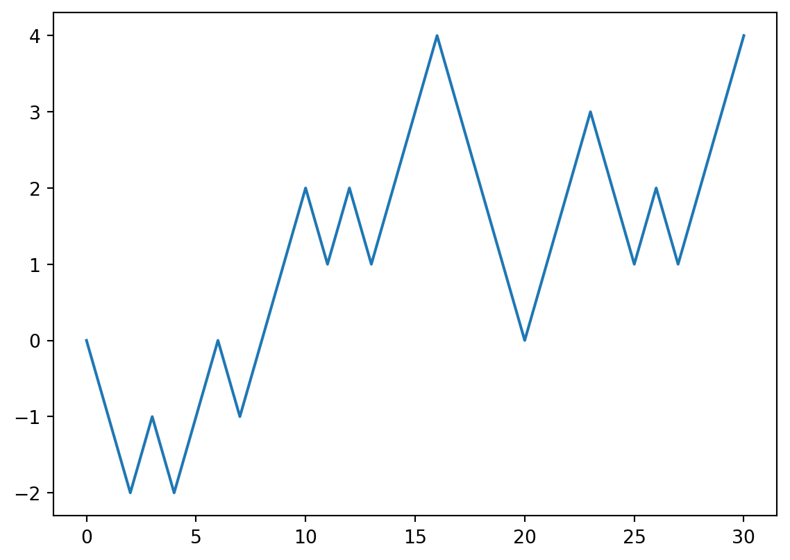
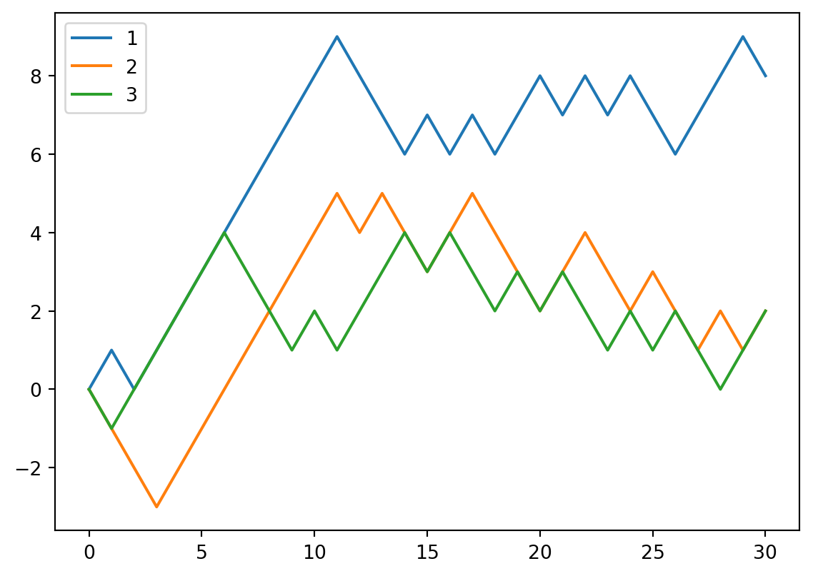

import numpy as np1 Data Science tricks
The main reference for this chapter is [1].
1.1 numpy
The basic data structure for numpy is numpy.ndarray. You may treat it as a generalized version of lists. However it can do so much more than the build-in list.
To use numpy, we just import it. In most cases you would like to use the alias np.
Note
In many cases, numpy.ndarray is a huge object since it stores tons of data. Therefore many of the operations related to numpy.ndarray are “in-place” by default. This means that if you don’t explicitly ask for a copy, there will be only one copy of the array and all later operations make changes to the original one.
However there are many cases that
1.1.1 Create np.ndarray
- convert a list into a numpy array.
np.zerosnp.onesnp.random.randnp.arange
Note
Please be very careful about the format of the input. For example, when you want to specify the dimension of the array, using np.zeros, you need to input a tuple. On the other hand, when using np.random.rand, you just directly input the dimensions one by one.
import numpy as np
np.zeros((3, 2))
np.random.rand(3, 2)In this case, the official documents are always your friend.
1.1.2 Basic indexing and slicing
1.1.3 Common attributes and methods
shapedtype- Any arithmetic operations between equal-size arrays applies the operation element-wise.
1.1.4 Fancy indexing
1.1.5 Transposing Arrays and Swapping Axes
axis=nis very important.
1.1.6 Mathematical and Statistical Methods
meansumstd,varcumsummaxandminmaximumandminimumargmin,argmaxnp.sortuniqueanydot: Matrix multiplicationconcatenate
1.1.7 Examples
Example 1.1 (Random walks) Adam walks randomly along the axis. He starts from 0. Every step he has equal possibility to go left or right. Please simulate this process.
Use choices to record the choice of Adam at each step. We may generate a random array where 0 represents left and 1 represents right.
Use positions to record the position of Adam at each step. Using choices, the position is +1 if we see a 1 and the position is -1 if we see a 0. So the most elegent way to perform this is to
- Convert
choicesfrom{0, 1}to{-1, 1}. - To record the starting position, we attach
0to the beginning of the newchoices. - Apply
cumsumtochoicesto getpositions.
import numpy as np
step = 30
choices = np.random.randint(2, size=step)
choices = choices * 2 - 1
choices = np.concatenate(([0], choices))
positions = choices.cumsum()
import matplotlib.pyplot as plt
plt.plot(positions)
Example 1.2 (Many random walks) We mainly use numpy.ndarray to write the code in the previous example. The best part here is that it can be easily generalized to many random walks.
Still keep choices and positions in mind. Now we would like to deal with multiple people simutanously. Each row represents one person’s random walk. All the formulas stay the same. We only need to update the dimension setting in the previous code.
- Update
sizeinnp.random.randint. - Update
[0]tonp.zeros((N, 1))inconcatenate. - For
cumsumandconcatenate, addaxis=1to indicate that we perform the operations alongaxis 1. - We plot each row in the same figure.
plt.legendis used to show the label for each line.
import numpy as np
step = 30
N = 3
choices = np.random.randint(2, size=(N, step))
choices = choices * 2 - 1
choices = np.concatenate((np.zeros((N, 1)), choices), axis=1)
positions = choices.cumsum(axis=1)
import matplotlib.pyplot as plt
for row in positions:
plt.plot(row)
plt.legend([1, 2, 3])<matplotlib.legend.Legend at 0x2b78af1de20>
Example 1.3 (Analyze positions) We play with the numpy array positions to get some information about the random walks of three generated in the previous example.
- The maximal position:
positions.max()4.0- The maximal position for each one:
positions.max(axis=1)array([4., 3., 1.])- The maximal position across all three for each step:
positions.max(axis=0)array([0., 1., 2., 3., 2., 1., 2., 3., 4., 3., 2., 3., 4., 3., 4., 3., 4.,
3., 2., 3., 2., 3., 4., 3., 2., 1., 2., 3., 2., 3., 2.])- Check whether anyone once got to the position 3:
(positions>=3).any(axis=1)array([ True, True, False])- The number of people who once got to the position 3:
(positions>=3).any(axis=1).sum()2- Which step for each one gets to the right most position:
positions.argmax(axis=1)array([ 8, 19, 3], dtype=int64)1.2 pandas
The basic data structure for pandas is pandas.DataFrame. You may treat it as a generalized version of tables.
To use pandas, we just import it. In most cases you would like to use the alias pd.
import pandas as pdSince DataFrame is more like a table, the biggest questions here is not to do computations (which is still very important), but to retrieve, search, sort, merge, etc.. those data.
1.2.1 Series and DataFrame
1.2.2 Index
1.2.3 Reindex
1.2.4 Dropping entries
1.2.5 Indexing, Selection, and Filtering
.iloc,.loc
1.2.6 Arithmetic and Data Alignment
1.3 matplotlib
1.4 seaborn and others
1.5 Exercises
Exercise 1.1 (Compare two numpy arraies)
Consider two numpy arraies x and y. Compare them entry by entry. We would like to know how many are the same.
Click to expand.
Solution. Note that bool values True and False can be treated as numbers 1 and 0.
x = np.array([1, 2, 3, 4, 5])
y = np.array([2, 1, 4, 4, 5])
numofsame = np.sum(x == y)
print(numofsame)21.6 Projects
1.6.1 project
- open and parse a CSV file
- do some operations
- decipher (replace letters / frequency analysis)